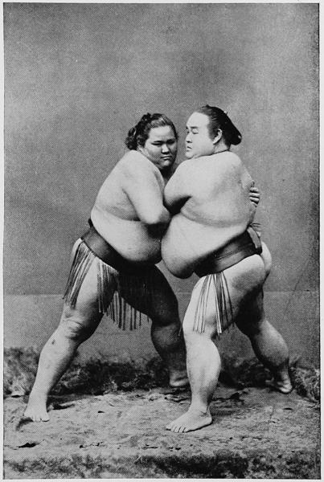

“Wrestlers”
Japan As I Saw It (1912)
When for the first time one visits a performance of Japanese wrestlers one is surprised to find in these Japanese prize fighters men of quite a different shape compared to our athletes. While with us the exercises and the diet and the whole training of the wrestlers have in view the bringing of the muscularity to its highest development and to free the body from all unnecessary particles of fat, quite other principles are followed in Japan. Though the Japanese wrestlers also lay great value on the development of muscular strength, their chief point is to lay by enormous masses of fat, to create heavy weights in order to enable them successfully to resist the attempts of the opponent to lift them from the ground. To this purpose, the wrestlers are fattened in the true sense of the word until heavy layers of fat have settled under their skin, and their eyes and nose have almost disappeared. The more monstrous masses of fat such a heavy-weight can boast, the more he is admired; and the fact is that in most cases the heaviest wrestler scores the greatest number of victories. I have seen contests between local celebrities, where the weights of the champions varied between 280 and 300 lbs.
Japan As I Saw It (1912)
The wrestlers appear to be retainers of daimios, and are trained from youth to their occupation. They are certainly men of great strength, but it was always a question with me how strength could exist under such masses of fat as they seem to be made of. In their exhibitions they are naked, excepting a belt drawn tightly around the loins, forming the only means of obtaining a firm hold of each other. It is doubtful whether they are as strong as the more muscular native stevedores, who trot along all day, bearing two or three hundred pounds of tea or copper, in loading ships.
Across America and Asia (1870)
One day when I was painting the willows [in Kamakura] my boy Matsuba, who had plenty of spare time for investigating the neighborhood while waiting to carry home my umbrella and things, came and told me that there was a wrestling-match at a small temple about a mile away. I packed up at once and we walked over there, for I was very anxious to see what kind of a sport it was. This was a tournament, and all the professional wrestlers of the neighborhood, and many youths anxious to distinguish themselves, had collected to take part in it. They were divided into three classes. The masters of the art were all past their first youth; not enormously stout, as they are often represented in drawings and carvings, but fine, athletic men, taller than the average of Japanese. They wore their hair in the ancient style, shaved away from the centre of the head, and the locks from the back and side made into a queue, turned up and knotted with a string on the top of the poll; they had no clothes except a loin-cloth and an embroidered apron. In the second class were men who had won but few prizes; they were not all in the professional get-up, and some of them were evidently laboring-men with a taste for sport. The third class was composed of youths, none of them more than nineteen or twenty years old. The contests took place in the temple court-yard on a circular bed of sand, under a roof supported by wooden pillars, but not enclosed at the sides; round the edge of this raised circle there was laid a straw rope, and the man won who could either fairly throw his opponent or force him across the rope without being dragged over himself. The proceedings were conducted by a Shinto priest in full dress, wide trousers, and a coat sticking out from the shoulders like that of a modern young lady, who with a peculiar-shaped fan gave the signal to begin and to stop. For the highest class this umpire was a venerable old gentleman; for the others the place was taken by young priests who needed to learn this part of their business. The wrestlers came on in pairs as their names were called, and after a great deal of marching round, stamping, rubbing their limbs, making gestures of defiance, and so on, they squatted opposite each other. When the signal was given to begin they rested their fingers on the ground between their knees, and leaned towards each other till their foreheads touched, sometimes waiting several minutes before attempting to make any grip. If the grip seemed unfair or unsatisfactory to one of the opponents, he immediately put down his hands, the priest stopped the bout, and all the preliminary business had to be gone through again; but if it seemed all right the struggle began, and sometimes lasted for five minutes, each man straining every muscle in a splendid way, and using all the science and cunning he knew. If it lasted too long without either man gaining any advantage, the priest signalled to them to stop, and they had to wait till their turn came round again. ... Everything was conducted in the most ceremonious and orderly manner, and there was no drunkenness or rowdyism, although the multitudes who had assembled were entirely of the poorest class.
Notes in Japan (1896)
Like dessert to a good dinner, the great champions were reserved for the finals, and number three advanced for his test. He was a moving mountain of adipose, tipping the scales at 365 pounds, and we wondered how such a mass of fat could show agility. His girdle measured two yards, and he could not see far enough over himself to sight the silk fringe below the welts of fat that rolled about his belt. His opponent was little, quick, and wiry, a muscular pigmy, beside this giant. We wondered how in the name of all Japanese gymnastics, Fatty could reach over his ponderous self and find the fellow. It seemed a case of the elephant and the flea. The dwarf walked around the perambulating mountain, sized him up, as if to say, “What am I up against?” and decided to buck up against the monster. Fatty simply shoved his great self against the little chap and pushed him off the stage.
A Woman Alone in the Heart of Japan (1906)
◀ Performing artsArts and crafts ▶